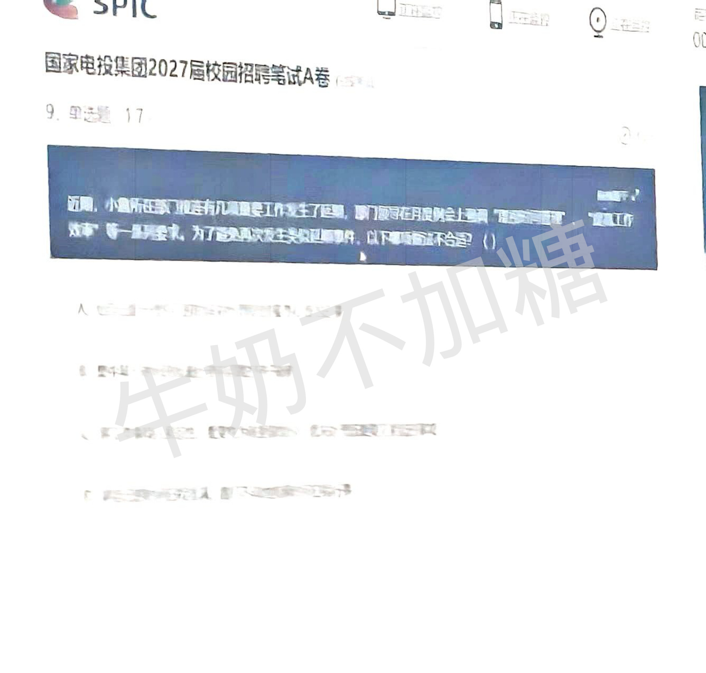

A-9 综合能力
暂不计分文字识别待确认
题干及选项有明显重影，我尚未完整恢复四个选项。

当前仍保持“不计分”；此页只展示核对依据，不修改答案或考试成绩。
已确认 A-文11：D 项为“截至2026年8月底，员工13万人”，答案 ABCD，已恢复计分（2 分），适用于新开始的考试。
已核实 B-10：答案 C，恢复计分（1.7 分）。两块已知积木分别有 11、6 个小方块，C 有 10 个；按上、中、下层逐格核对，可完整拼成 3×3×3 立方体。新开始的考试已加入逐层拼合解析。
已修正 B-18：正确图形为图 A，已补齐 D＝图 A 按钮，答案改为 D（1.7 分）。第三行叠加后消去共有的右上方斜线段，剩余图形对应图 A。原有 A＝图 B、B＝图 D、C＝图 C 的顺序不变。校对后已同步修正选项和判分。
已修正 A-24：题干末尾应为“梅花”，此前误识别成“荷花”。答案 A：前句对应竹子，后句“冰雪林中著此身，不同桃李混芳尘”对应梅花。已恢复计分（1.7 分），适用于新开始的考试。
已按要求采用推定答案 A-19：C。已恢复计分（1.7 分），适用于新开始的考试。A、B、D 的反驳更直接，按命题意图推测选 C；但 C 如确为“散热更快”也可能间接削弱，故解析保留这一疑点，不标作已核实答案。
已改编 A-18-4、A-18-5：按题面条件自编补充调查总人数为 5000 人，明确标注为模拟练习条件，非原卷信息。第 4 小题约 1731 人，选 D；第 5 小题仅①正确，选 B。两题各恢复计分 1.7 分，新考试生效。
已按要求采用推定答案 A-13：D。文段重点是各地开展宪法宣传、提高群众参与度与覆盖面，D 的宣传热潮最贴近主旨。B 后半句仍未完全辨认，因此保留推定标记。恢复计分 1.7 分，适用于新开始的考试。
已补齐 A-22：C。结合字形及《一面青砖墙，浓浓鱼水情》的文章原文，C 还原为“风云变幻；汲取；激扬”。解析已加入原文链接，恢复计分 1.7 分；模糊的干扰项仍保留原图。新开始的考试生效。
并非都能确定是原题问题。剩余 1 道尚未识别清楚。
原图可能含原有勾选，它们不代表已确认的正确答案。此页包含解题提示，建议考后查看。
文字识别待确认
题干及选项有明显重影，我尚未完整恢复四个选项。

A 卷：企业文化第 8 题、综合能力第 42 题。
B 卷：综合能力第 4 题、第 6 题、第 36 题的第 4 小题。
这些题未编造补入，亦不计入已收录的 115 道题；“未找到”不等同于已确认原卷缺页。